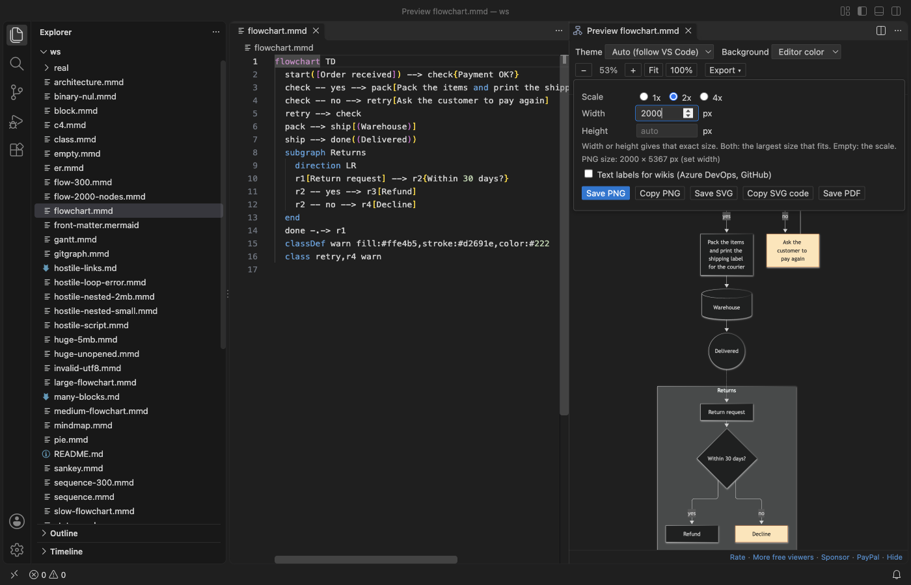

Open files in VS Code and Cursor / Docs and diagrams
Export a Mermaid diagram to PDF
Install Mermaid Diagram Editor & Viewer by Zovo in VS Code, open a .mmd file or a Markdown file with mermaid blocks, and open the Export menu in the preview. "Save PNG" and "Save SVG" are free, at 1x, 2x, 4x or an exact width. "Save PDF" puts every diagram of the file in one PDF with a title page. The PDF, the export of all diagrams in the workspace and export on save are Zovo Pro (USD 19 once) with 3 free tries each. No sign-in, no network.
Free, MIT license. Extension ID zovo.mermaid-viewer, version 0.3.2. Needs VS Code 1.90.0 or newer.

Steps in VS Code
- Install Mermaid Viewer from the Marketplace, or press Ctrl+P (Cmd+P on macOS) and run
ext install zovo.mermaid-viewer. - Open a
.mmdor.mermaidfile, or a Markdown file withmermaidblocks, and open the preview. - Open the Export menu. Pick a scale or an exact width; the menu shows the final size.
- Click "Save SVG" or "Save PNG" for one diagram, or "Save PDF" for every diagram of the file with a title page.
- For a docs folder, run "Export All Diagrams in Workspace", or turn on "Export on Save" to keep
name.svgnext to each source.
Steps in Cursor, Windsurf or VSCodium
- Open the Extensions view with Ctrl+Shift+X (Cmd+Shift+X on macOS).
- Search for
zovo.mermaid-viewerand click Install. Cursor, Windsurf and VSCodium install from Open VSX, where it is published aszovo/mermaid-viewer. - If your editor has no gallery, download the .vsix from the Open VSX page and run "Extensions: Install from VSIX...".
- Then use it the same way as in VS Code.
What Mermaid Viewer handles
- PNG and SVG at any size, copy to the clipboard, and the background you pick: editor color, white, transparent or custom.
- "Text labels for wikis" writes labels as plain SVG text for Azure DevOps and GitHub wikis.
- Export All Diagrams in Workspace writes every diagram to
mermaid-export/with the same folders as the sources. - Export on Save redraws only the diagrams whose text changed.
What it does not do
- Diagrams over 500,000 characters or 2,000 links are not drawn until you raise the setting.
- The PDF holds the diagrams and a title page, not the Markdown text around them.
Free and Zovo Pro
Free, and staying free: the live editor and preview for .mmd files and Markdown, the outline, themes, and Save PNG, Copy PNG, Save SVG and Copy SVG code.
Zovo Pro adds these tools to Mermaid Viewer. Each one works 3 times on your computer before it asks for a license. Nothing about Pro shows when you open a file: no popup, no countdown, no banner.
- Save PDF: every diagram of a file in one PDF with a title page.
- Export All Diagrams in Workspace, to SVG, PNG or both.
- Export on Save: image files next to each source, kept up to date.
Zovo Pro costs USD 19 once. It is not a subscription, and one purchase covers every Zovo VS Code extension. Today it also covers the Pro tools in Hex Viewer, Postgres & MySQL Query Client and DOCX Viewer, and Pro tools added to other Zovo extensions later.
Two ways to unlock it:
- GitHub Sponsors: pick the "$19 one time" tier. Then, in VS Code, click a Pro tool and pick "Unlock with GitHub Sponsors" (or type "GitHub Sponsors" in the Command Palette) and sign in with the same GitHub account. A monthly sponsorship of USD 10 or more that is still running counts too. The "$15 one time" and "$5 a month" tiers on the same page are for Obsidian plugins and do not include Zovo Pro.
- PayPal, no GitHub account needed: send USD 19 by PayPal with "Zovo Pro" in the note, then post the transaction ID with the Zovo Pro key form (a public GitHub issue, so post only the ID). The license key goes to the email address of your PayPal account within a day. Click a Pro tool and pick "I have a license key" (or type "license key" in the Command Palette) and paste it. The key is checked on your computer, with no network call.
A team of 5: USD 59 once by PayPal, with "Zovo Pro Team" in the note. Every rule and every Pro tool is on the Zovo Pro page.
In JetBrains IDEs (IntelliJ IDEA, PyCharm, WebStorm, CLion and others)
- Mermaid. Editing support and a diagram preview for Mermaid in JetBrains IDEs (1,701,850 downloads). Zovo has no JetBrains Mermaid plugin.
Other options
- Markdown PDF (
yzane.markdown-pdf, 4.3 million installs, on Open VSX). Its own description: "Convert Markdown to PDF". Pick it for the whole Markdown page with its text. - Mermaid Export Pro (
GSejas.mermaid-export-pro, 2,482 installs, not on Open VSX). Its own description: "Professional Mermaid diagram export with multiple formats and cross-platform reliability". Not on Open VSX. - mermaid-cli.
mmdc -i diagram.mmd -o diagram.pdfexports from the command line. Free; it downloads a headless Chromium.
Install counts and Open VSX status were checked on 9 November 2026. Descriptions in quotes are the extensions' own.
Questions
Can I export a Mermaid diagram as SVG or PNG for free?
Yes. Save PNG, Save SVG and both copy buttons are free.
Does it work offline?
Yes. It has no sign-in and makes no network calls. Exported SVG files load no web fonts.
What does Zovo Pro add?
Save PDF with a title page, Export All Diagrams in Workspace and Export on Save. USD 19 once for every Zovo VS Code extension, 3 free tries each.
More about Mermaid Viewer
Read the Mermaid Viewer page for every feature and setting, or the source code on GitHub.
Related guides
- Mermaid Diagram Editor & Viewer on the VS Code Marketplace (also on Open VSX). Live Mermaid preview beside the code, with PNG and SVG export.
- Preview Mermaid diagrams in VS Code
- Preview a reStructuredText (.rst) file in VS Code
- Read an RTF file in VS Code
- Preview an SVG file in VS Code
Zovo Pro and support
Zovo Pro: USD 19 once, every Zovo viewer. It turns on the Pro tools in this extension and in the other Zovo extensions you use. The free features stay free.
After a card payment your license key shows on the next page. Paste it with the command "Zovo Pro: Enter a key".
You can also support the work with no Pro:
Need your format supported?
Open a format request with a sample file, and I reply there whether it can be done. For USD 299 once, through this GitHub Sponsors tier, I add your file format or a missing feature to this extension, with tests, within 7 days.